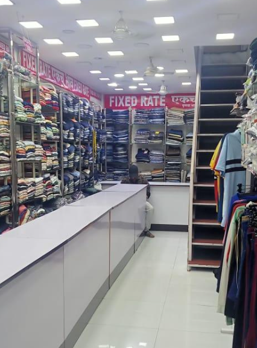
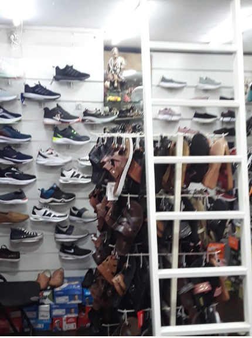
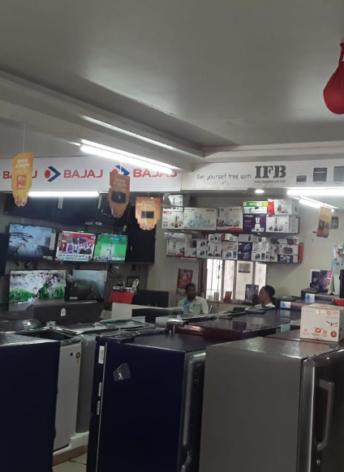
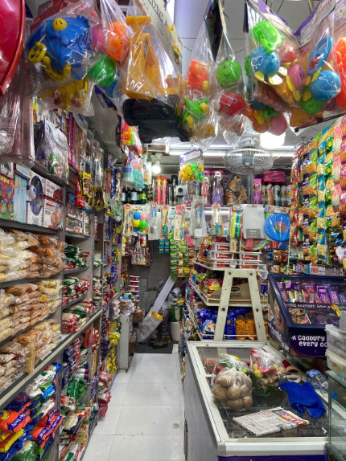
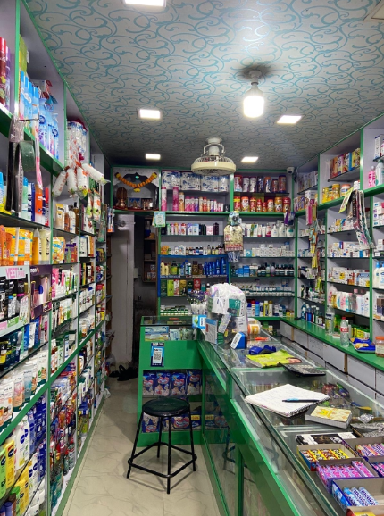
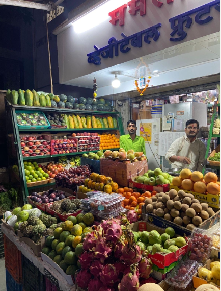
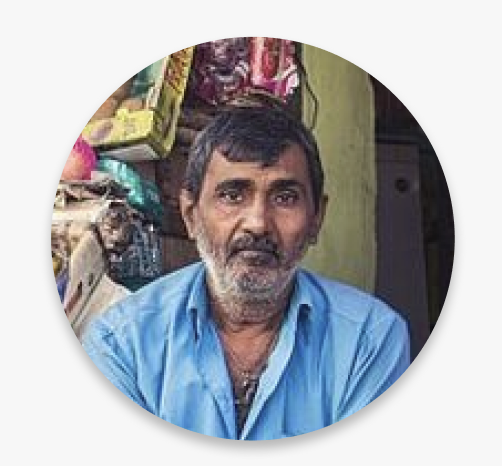

Vocal for Local.
A field study into how the shift to online shopping had reshaped the lives of Pune's market vendors during covid, and why the question we started with was the wrong one.
"The abrupt shift of shopping preference from offline to online and its impact on the local vendors and shopkeepers in Pune."
Local markets are central to daily life in Pune, yet vendors were visibly losing ground to online platforms. We wanted to know what was actually driving that beyond the obvious convenience story, and what it was doing to the people behind the stalls.
Why interviews and observation, not just a survey.
A survey would have told us what people did. We wanted to know why. With a small sample (14 participants), we treated the constraint as a reason to go deep, not wide.
Interviews · 30–40 min
Chosen because trust and bargaining behaviour only surface in conversation.
This helped capture details that surveys could not.
Observation
Chosen because what shopkeepers say differs from what they do at the counter.
Captured layout, posture, customer interactions, body language.
Customer survey
Used to triangulate vendor narratives against actual shopper behaviour.
23 responses on platform preference, quality vs price, after-sale service.
Task analysis
Compared step-counts of offline vs online buying to test convenience claims.
Online consistently shorter; offline added trust steps (quality check, bargain).
Who we spoke to · 36 conversations
shopkeepers, in-depth
customer survey responses
Six shops, walked, photographed, sat in.

Roshan Mens Fashion
Polite, patient, friendly

Saiprasad Footwear
Co-operative, playful with kids

Raj Electronics
Patient, smiling, frustrated underneath

Panchdeep
Helpful, attentive, calm

Life Care Medico
Sincere, cracking jokes with customers

Mamta Mart
Ambitious, energetic, patient
Observation matrix tracked sixteen behavioural traits across each shop. The pattern was almost uniform: shopkeepers were attentive, polite, and consistent — the problem wasn't service quality.
Two numbers reframed the project.
Finding 01
customers use both online and offline platforms.
The assumption that customers had "moved online" was false. Most were doing both, choosing per category, per moment.
Finding 02
prioritise quality over price.
The discount story was wrong. Customers weren't choosing online because it was cheaper but because they trusted it more.
Affinity mapping · six themes from 36 conversations
01
Pain points
02
Discounts
03
Covid
04
Services
05
Behaviour
06
Motivation
Six categories surfaced, but the pattern beneath them was singular: vendors weren't failing on product or effort. They were losing on perceived trust and convenience — a gap created by customer motivation, not vendor capability.
Suresh Chaudhary.
To keep the research grounded in a real person rather than an abstract "user", we built an empathy map around one vendor — a grocery shopkeeper running a third-generation family business of twenty years.

Suresh Chaudhary
Age 50
Grocery store owner
Pune · 20 years in trade
3rd-generation business
Thinks & feels
Frustrated by constant bargaining · insecure about the shift online · still proud of the family legacy.
Sees
Fewer customers in store post-Covid · customers entering with phone screens, comparing prices.
Hears
"This is cheaper on Amazon." · "Do you have this exact one?"
Says & does
Offers extra discounts and free delivery · matches online prices when pushed · stays polite, always.
Insight from Suresh
Suresh wasn't short on customers' goodwill. He was short on a reason for them to choose him over an app. That reframed the whole project.
We were asking the wrong question.
The data made one thing clear: vendors were not the broken part of the system, customer motivation was. People still valued local markets; they had simply lost the prompt to return.
Started with
"How do we help vendors survive the shift to online shopping?"Treats vendors as the problem. Pushes the design toward propping up the supply side.
Reframed as
"Amidst online shopping, how might we motivate customers to return to offline markets and strengthen the local economy?"Moves the lever to the demand side. Treats the cause, not the symptom.
Where design could intervene.
The output was not a product but a map. Three horizons of opportunity, ordered by distance from the existing market.
Horizon 01
Current solutions
Existing market
What already exists — Dunzo, Lovelocal. Hyperlocal delivery solving convenience, not motivation.
Horizon 02
Where the project lives
Existing need, unaddressed
Surfacing local shops on Google · making in-store offers visible · affiliating local vendors with online discovery. Vocal for Local sits here.
Horizon 03
Speculative · long term
New need
Civic campaigns repositioning local shopping as identity · area-code directories · trust-led platforms.
Vocal for Local taught me that the most valuable thing research can do is change the question.
I came in expecting to document how vendors were struggling. I left understanding that the design problem lived with the customers, not the vendors. Working with a real community and vendors in particular is what made that shift visible.